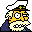

[ Main
| Schedule
| Rules
| Teams
| Message Board
| Weather
| World Cup News ]
WMC Quad Cup Soccer
UPDATE: okay, i am leaving this site as is, never to be changed just to preserve the wonderful season it had. since i, ben neely, am no longer at WMC we are now trying to form a new head of the league. whether or not this occurs, i do not know but if it does it will be seen at WMC Quad Cup Soccer II, so, o there and see if it is going down or not.
I have heard that people not in the league are coming to this page so I figure I should write some stuff. Quad Cup Soccer League is based on pick-up soccer that has been played in the Quad since I have been here. We started organizing it two springs ago but that just meant I put people on a phone list. The rules are basic for now, made only to keep play fair and calls non-subjective. I, Ben Neely, am the one that heads this operation presently but will be passing it on to a group of people next year, yet to be announced. If you think this is cool and want to play next year, call me x8170. If you think is is cool enough to buy a shirt, we might have those available soon and taking orders when school starts in fall 2001. They are going to be pretty damn cool so ask someone about them. If you think you would like to have something to do with running this operation next year, call me also. Want to see my job when not playing, click here to see pure excitment. To see it get so exciting that I punched Clint in the mouth, click here. Well, that is all for the public. Roam around freely and don't complain about the site because I am not able to do really cool stuff.
Tounrament Etiquette
Well, it is now tournament time and this is how it is going to be:
1) In tournament play, only those on the teams roosters (see below) will be able to play.
2) You must pay $2 before you can play!
3) In games where Ben is on the field, another unbiased source will be acting as the authority and must be listened too.
4) Play is expected to be rough but lets try not to get too bad, we don't want people to lose any limbs in these games.
5) Due to the ball height rule being the most subjective, this is how it will now be during the tournament: A ball must be on the ground, exceptions being if the ball is on the ground for considerable distance and blatently hits a hole and bounces at the goal line. Yes this is stricter and will be harder to score but this is how it is. That ball must roll across the line.
6) Option #1 involving passes through the backside of the goal for a score will no be tolerated.
7) If anyone gets hurt by you or by a ball that you kick, you must sit out with the person until they can play again.
8) The games with start within 5 minutes of scheduled start time with 4 on the field (this is added incentive to show up on time)
Well thats all, if you want to see the season game reviews, go here. If you want to see tournament game reviews, go here.
Sexy Bitches FC
Rob C. x8170
Matt M. x8345
Dan Saul x8018
Jason F. x8386
Jorges x8083
Marie L. x8187===>out for the 2001 season due to injury.
Spida United
Matt W. x8481
Todd x8481
Tyler W. x8433
Joe M. x8121
Mike Y. x8353
Elton John FC (Fan Club)
Lee G. x8214
Lindsay S. x8598
Jamie x????
Ben N. x8170===>not returning for 2002 season; ran away.
Sean C. x8205
Andy E. x8215--> out of league indefinately
Team 4
Chris x8413 --->the ankle will heal
Brian B. x8386
Mike D. x8258
Phil V. x8236
Ian x8330
Lisa x8189
It's the Water
Josh x8455
Clint M. x8204--->Graduating this year
Steve P. x8188
Maciej P. x8214
Nate W. x8299
Craig x8094
Mrs. Wolf is Hot!
Andy M. x8048
Aramus x8330
Keagan x8364
James x8455
Kris S. x8030
Dan x8003
Yes, the means that person is captain. Some of these were random selections. I haven't decided what the role of a captain is but it has something to do with me delegating authority. If you are one, don't worry about it. You just need to know the names of your team mates for next season.
If I mis-spelled your name, I am sorry. The point of this list though is for everyone to see who you are playing with. Now go to the schedule and see when you play
Oh yeah, you are the person to come look around (yes, this number is higher than the real number).